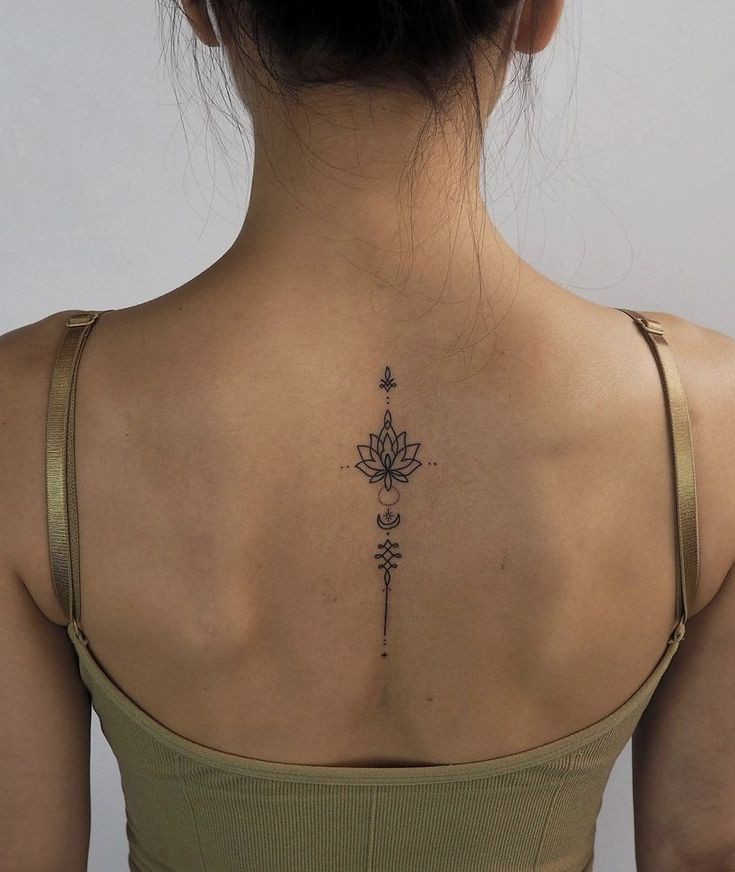
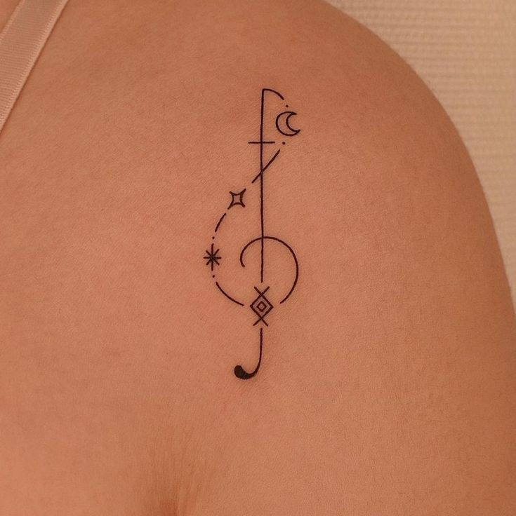
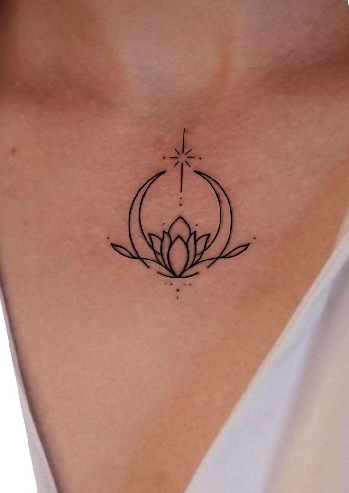

Fine line tattoo
About Fine line tattoo
- Fine line tattoos are all about delicacy and precision
- They're characterized by the use of thin, intricate lines to create detailed and often minimalist designs.
Characteristics
- Thin Lines: As the name suggests, these tattoos use very fine lines, often requiring a steady hand and high skill level from the tattoo artist.
- Detail and Precision: Fine line tattoos can depict detailed illustrations, including portraits, floral designs, animals, and more
- Minimalist Aesthetic: Many fine line tattoos are minimalist, focusing on clean, simple designs that can be small and subtle.
- Low Pain and Quick Healing Due to the fine lines and minimal shading, these tattoos often result in less pain during the process and faster healing times.


